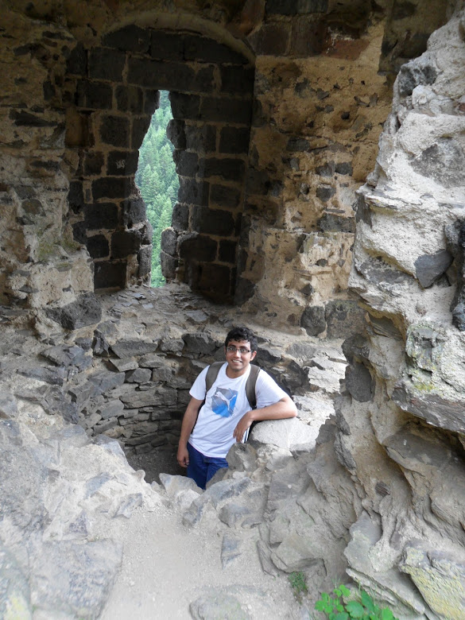

Welcome to my webpage
I am an Associate Professor at University of Victoria. I am in the mathstat department.
Education
I obtained my PhD from University of British Columbia under the supervision of Prof. Omer Angel and completed a Post-Doc in University of Cambridge under Prof. Nathanael Berestycki. Before that I obtained my Masters and Bachelors degree in Statistics from Indian Statistical Institute, Kolkata, India.
Research interests
I work broadly in the field of probability theory. In particular, I am mostly excited by problems originating in statistical mechanics and mathematical physics. I also dabble in combinatorics, ergodic theory and theoretical statistics from time to time. Most recently, I have been thinking about various random surface models which conjecturally have a conformally invariant scaling limits (which in most cases is the Gaussian free field). I am also interested in understanding the behaviour of various types of gradient models with hard core constraints. In another direction, I am also interested in understanding whether a statistical mechanics model can be realized as a factor of iid and its various relations with the underlying geometry of the graph and the phase transition of the model. In the past, I have worked in and around various aspects of random planar maps, Liouville quantum gravity and unimodular random graphs and uniform spanning trees. I also go back to these topics from time to time.
I am currently accepting Masters and PhD students. Feel free to contact me if you are interested in joining my group.